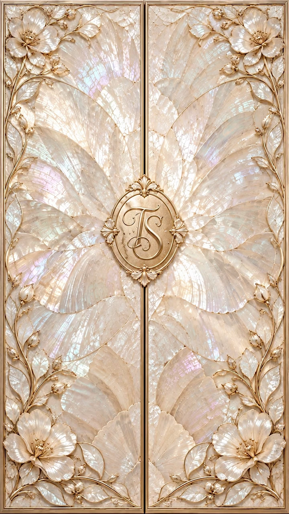
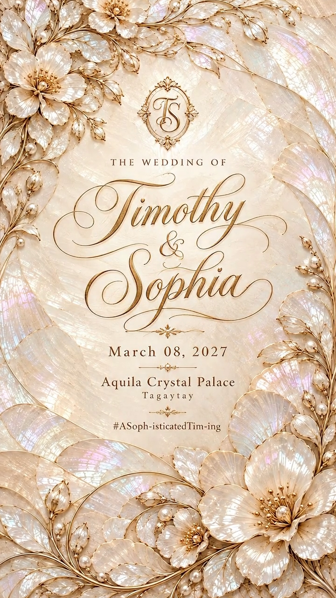

The guest list
Count
me in.
Confirm attendance ↗Sample RSVP · preview only


8 March 2027. Aquila Crystal Palace, Tagaytay.
Before this day · Our chapters
Long conversations. Unplanned detours.
Ordinary days that became ours.
Scroll to move through our chapters ↓
What we’re looking forward to
Come for the vows. Stay for a long dinner,
full glasses, and a very full dance floor.
A feeling, held in a frame
Wedding inspiration · licensed stock photographs
Hillside photograph by Foto Pettine under the Unsplash License. Seaside photograph by Asad Photo Maldives. Seaside image sourced from Pexels under the Pexels License. These inspiration images do not depict Timothy and Sophia.
A place for all of us
The setting
Tagaytay
One venue, from our first vows to the last dance. Join us for a ceremony under glass, photographs, and dinner as the evening settles in.
Leave room for traffic, and bring a light layer for the evening. The illustration is decorative; use Maps for the venue’s location.
A little rhythm for the day
Touch a moment to turn the clock. Sample celebration timings.
A little dressed up
Formal, with a little room to be yourself.
Long or midi gowns, a tailored suit, or a formal barong. Think soft neutrals and muted colours. We’re keeping ivory for the bride.
Touch a colour to see it in the light.
Champagne · warm, soft, and luminous
Formal, without feeling uniform.
Our circle
The friends who make every chapter better.
Anna ReyesMaid of honour
Bea MendozaBridesmaid
Isabel CruzBridesmaid
Rafael SantosBest man
Miguel DizonGroomsman
Paolo RiveraGroomsman
Sample wedding-party names for the concept
A few things, answered
Arrive from 2:30 PM so you have time to settle in before the 3:00 PM ceremony. Please allow extra time for the drive to Tagaytay.
We’ve planned a seated dinner, so please follow the guest names and number of seats shown on your invitation. Our sample RSVP below lets you preview a party of one or two.
Keep phones tucked away for the ceremony so everyone can be present. Once the vows are over, take all the photos you like and share them with our hashtag.
Gifts are optional. If you would like to give something, a card is welcome at the reception.
A light layer for the evening and comfortable shoes for moving between the ceremony, photographs, and reception.
One day closer
8 March 2027 · 3:00 PM · Philippine time
The guest list
Sample RSVP · preview only